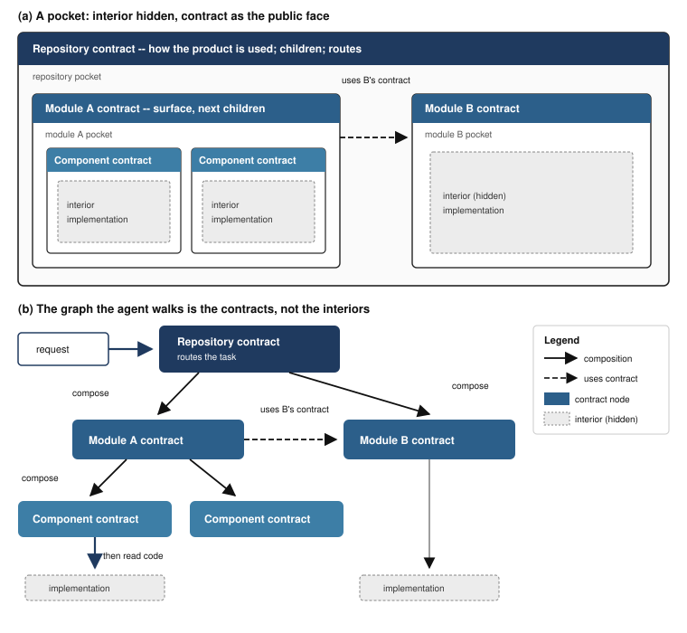

Coding agents can produce software faster than a person can keep the result structured. Each new session tends to reconstruct architecture from source, and that reconstruction is not stable: the agent may couple the wrong units, edit across a boundary, or dissolve a module while making a local change. This note claims that the right control plane for that work is an authored recursive contract graph. Software is a hierarchy of encapsulation pockets. Each pocket exposes a contract: the public face the outside may use, the responsibility it owns, and the next smaller pocket to read. The graph is both the navigation structure and the encapsulation boundary, so an agent can walk the system without treating the whole repository as open interior. The claim is complementary to recovered code graphs, which show what the source currently is, and to contract-driven greenfield generation, which synthesizes a contract for one creation run. The intended setting is ongoing work on a living repository. Contract Graph Dev Kit, an open-source framework for agentic software development, implements the model as schema-backed YAML nodes, task routes, and machine checks that the authored graph is closed, and carries agreed work through a delivery workflow that keeps the graph truthful as the code changes. Correspondence between that graph and every implementation dependency is not yet proved.
Large language models have changed the cost of writing code. They have not changed the cost of understanding, placing, and maintaining what was written. A coding agent that can edit a repository in minutes can also, in those same minutes, import across a layer, duplicate a responsibility, or widen a module until the next session can no longer see a boundary.
The usual remedies give the agent more context: a larger window, retrieval, a skill file, or a graph extracted from the abstract syntax tree. Those help an agent find code. They do not tell the agent which pocket of the system it is allowed to change, or what must remain true if it does.
This note argues for a different object. Structure should be authored as a graph of contracts, one contract per owned boundary, nested from repository to module to component, and only then to implementation. An agent routes through contracts before it reads source. A folder plus its contract is a workspace: change anything inside; keep the contract. A change that must escape the pocket is a contract change, not a silent widening of the work area.
The product of that argument is not a new theory of modules. Information hiding [1], Design by Contract [2], and hierarchical assume-guarantee contracts [3] already say that a unit should present a stable face and hide a volatile interior. The shift is the audience and the duration. The contract graph is written so a coding agent can wander a repository across many sessions without dissolving the structure a person would have kept by habit.
Software for agents should be a graph of encapsulation pockets. Each pocket’s contract is what the outside may use, and where to go next.
Figure 1 is the picture of that sentence. A pocket is a unit of encapsulation. Its contract is the public face: purpose, surface, and the next node. The interior stays behind that face. Nested pockets decompose a parent. The agent does not wander interiors. It walks the contracts. Those contracts, with composition edges and lateral “uses contract” edges, are the graph.

Three properties make a pocket usable as a control plane rather than as documentation.
Placement. The contract states how the parent uses the unit: why it exists, what it owns, and what is outside its boundary.
Closure. The contract names the child or sibling context a worker may need next. A node that cannot say where to go next is prose, not a graph node.
Confinement. A change that must leave the unit becomes an explicit contract change. Callers depend on the public face, not on interior details. The interior may be rewritten; the face is changed on purpose.
Together these are a control plane: the same artifact routes the agent and keeps the encapsulation. The graph is not a wall. The contract is a handle. It is how an agent enters a pocket, does the work, and leaves the rest of the system alone.
Hierarchy is the primary route:
repository → module → (submodule)* → component | library → implementation
Lateral edges exist. A module may consume a sibling’s public contract; a library may serve several parents. Those edges do not confer ownership. Every pocket must still be reachable from the root through composition.
The intended agent loop is:
request → contract route → contracts from broad to narrow → bounded source → verification
This does not eliminate code reading. It stops broad code reading from being how every new session reconstructs the architecture.
Parnas argued that modules should be decomposed around secrets: design decisions likely to change [1]. Meyer made the public face a contract of preconditions, postconditions, and invariants [2]. Benveniste and colleagues developed assume-guarantee contracts as the algebra of hierarchical system design [3]. Architecture description languages and service interfaces (OpenAPI, gRPC, and language-native exports) are the same idea at particular scales.
This note does not replace that lineage. It says the lineage is now the agent’s map. The contract is no longer only for compilers, callers, and human reviewers. It is the durable context a coding agent should load first.
LocAgent [4], SeeRepo [5], Prometheus [6], and related agents parse a repository into a heterogeneous graph of files, classes, functions, imports, and calls, then traverse that graph to localize an issue. The graph is recovered from source. It is a picture of what the code currently does.
A recovered graph cannot be the encapsulation boundary. It will faithfully show a leaky import. An authored contract graph is a claim about what must remain: the public face, the owned responsibility, and the child pockets. Drift between the two is a defect, not a discovery.
Contract-Coding [7] synthesizes a language contract from vague intent and uses it as a topological hypervisor for greenfield repository generation. Workers implement against the contract rather than against peer source. The paper invokes Parnas and Meyer and states an independence claim: given a sufficient contract, module implementations need not read each other.
That work occupies genesis. The complementary problem is duration. Once a repository exists, later sessions still need a map, including sessions that did not generate the code. The contract must be authored or adopted, kept after the generation run, and remain the route for change. Brownfield code that was never generated from a contract is the common case.
A separate cluster of tools encodes architecture as YAML or fitness functions and rejects edits that cross a layer (for example ArchUnit-style dependency rules, and recent agent-facing gates). LogicLens-style systems extract API, event, and package contracts across repositories for impact analysis.
Enforcement is useful and is not routing. A linter can refuse a bad import after the agent has already wandered the wrong files. An extracted interface graph can show producers and consumers of a wire format. Neither is a recursive ownership graph whose job is to hand the agent the smallest pocket and keep that pocket’s interior closed.
Work on “agent contracts” specifies what an agent may do: budgets, tools, must/must-not clauses [8]. That is a contract on the worker. This note is a contract on the software the worker edits. Both can exist. They are not the same object.
Each governed directory owns one canonical node. In Contract Graph that node is YAML, because a schema can reject a missing face, a missing child list, or a dangling route. The format is not the claim. The claim is that the pocket, the face, and the next edge are one artifact.
A contract records at least:
The surface is the parent’s way in. It may be a service type, a module of functions, an HTTP resource, an event, or another native export. Constructors, persistence, vendor types, and algorithms stay behind that face. A new entry or a bypass is not “stay inside the pocket.” It is a contract change.
The same schema applies at every scale. Kind (repository, module, component, library) names the architectural size; it does not change what a contract is. A child decomposes its parent’s responsibility. Child and parent edges are reciprocal. Depth is mixed: one module may be a leaf; another may nest several kinds.
A large prose architecture document fails as a control plane because every task must load all of it, and because it does not point to a smaller node. Recursive contracts keep a module overview short: the detail lives in children.
Once contracts are the map, an untrue map is worse than no map. An implementation that violates its contract is wrong. Changing the contract is explicit. A rule that cannot be rejected by a test is advice, not an invariant.
The causal order is:
explicit project context → precise task routing → bounded implementation reading → contracts that must stay truthful → detectors and rules
Governance is a consequence of a useful graph. If enforcement grows while the graph stops being the way to locate work, the by-product has replaced the purpose.
Contract Graph Dev Kit (short name Contract Graph) is an open-source implementation of the model (npm package contract-graph, command-line tool cg, source at https://github.com/sarada-io/contract-graph, documentation at https://contractgraph.dev). It was built from greenfield product work beginning in March 2026 and released publicly in August 2026. Version 1.0 of this note described release 0.5.0; this version describes release 0.8.0. The model in Sections 2–4 is the same in both; the implementation has grown around it.
The graph is the core. Each governed unit owns one <unit>/.agents/cg/contract.yaml, validated against a published JSON Schema. The tool routes a task phrase to contracts deterministically, discovers module roots in existing repositories, and verifies that the authored graph is structurally closed: reciprocal composition edges, no cycles, reachability from the root, declared surfaces whose paths exist, and invariant–verification links.
Around the graph, the Dev Kit installs agent skills for a delivery workflow on five coding-agent harnesses. A plan agrees the outcome and the conditions for review. Production implements inside the responsible boundaries and brings a working result to review. Sign-off then finishes tests, documentation, and contract updates, and runs graph verification. A prototype mode reaches an agreed experience by iteration before the same completion. Adoption first records owner-approved project intent, so the graph is anchored to what the product is meant to be and not only to what the code currently does. A read-only assessment reports where an existing repository would benefit before anything is installed.
The workflow is not the claim of this note. It exists because the graph is only a control plane if every change leaves it true: the loop that edits the code is the same loop that updates the affected contracts.
What a fresh session is supposed to answer from contracts:
The implementation is opinionated at install and non-possessive after install. Structural protocol is machine-checked. Product rules stay repository-owned. Broader engineering advice remains advice unless the repository binds it.
This note is not an evaluation of adoption. The system exists so the claim is not only prose.
The authored graph can be proved closed as a graph. It cannot yet be proved complete as a picture of the code. The verifier does not yet show that every implementation dependency is a declared child or sibling, that exported symbols match the surface, or that a worker’s writes stay inside an assigned pocket. Parallel work against contracts is therefore a consequence the model allows, not a safety theorem.
The current implementation narrows that gap without closing it. cg contract inspect parses source without executing it, for JavaScript/TypeScript, Dart, Java, Kotlin, Python, Go, and C#, and reports the exported declarations and imports of one selected unit. It proposes surface and dependency facts for the author to review, and maps a resolved import to its declared contract owner. It writes nothing and proves nothing. A language export is a candidate, not an architectural surface; an import is evidence the author must classify as a declared dependency, a bypass to repair, or a sign that the boundary needs review.
Until those checks exist, the honest benefit is routing and bounded reading, not a guarantee that an authored subtree is the whole story.
There is also no user study in this note. The evidence that the model pays is the author’s use of it on product repositories, which is existence, not comparison. A later study should measure out-of-boundary edits, files read, and contract updates, with and without the graph, on brownfield tasks. Recovered-graph agents [4] and generation-time contracts [7] are the right baselines.
An authored recursive contract graph is the control plane this note argues for. It is the navigation structure and the encapsulation boundary at once. The contract is the public face of a pocket and the edge to the next pocket, so a coding agent can wander a repository without treating every file as interior.
Greenfield generation can start from a synthesized contract [7]. Ongoing work needs a contract that survives the next session, including on code nobody generated from a spec. Recovered AST graphs help an agent see the code that is there [4]. They do not say which structure must be kept.
The name of the idea is the graph of encapsulation pockets. Contract Graph Dev Kit is one recording of it.
[1] D. L. Parnas, “On the criteria to be used in decomposing systems into modules,” Communications of the ACM, vol. 15, no. 12, pp. 1053–1058, 1972. https://dl.acm.org/doi/10.1145/361598.361623
[2] B. Meyer, “Applying ‘design by contract’,” Computer, vol. 25, no. 10, pp. 40–51, 1992.
[3] A. Benveniste, B. Caillaud, D. Nickovic, R. Passerone, J.-B. Raclet, P. Reinecke, A. Sangiovanni-Vincentelli, T. Henzinger, and K. Larsen, Contracts for System Design, NOW Publishers, 2018. https://people.rennes.inria.fr/Albert.Benveniste/pub/ContractsMonograph2018.pdf
[4] Z. Chen, X. Tang, G. Deng, F. Wu, J. Wu, Z. Jiang, V. Prasanna, A. Cohan, and X. Wang, “LocAgent: Graph-guided LLM agents for code localization,” in Proc. ACL, 2025. https://arxiv.org/abs/2503.09089
[5] SeeRepo: “LLM agents can see code repositories,” arXiv:2606.14061, 2026. https://arxiv.org/html/2606.14061
[6] Prometheus: “Towards long-horizon codebase navigation for repository-level problem solving,” arXiv:2507.19942, 2025. https://arxiv.org/html/2507.19942
[7] Yilin, L. Zhao, and Y. Shi, “Contract-Coding: Towards repo-level generation via structured symbolic paradigm,” in Findings of the Association for Computational Linguistics: ACL 2026, pp. 8187–8206, 2026. https://arxiv.org/abs/2604.13100
[8] Q. Ye and J. Tan, “Agent contracts: A formal framework for resource-bounded autonomous AI systems,” arXiv:2601.08815, 2026. https://arxiv.org/html/2601.08815
A. Sinha, Contract Graph Dev Kit, version 0.8.0, 2026.
https://github.com/sarada-io/contract-graph
https://www.npmjs.com/package/contract-graph
https://contractgraph.dev